ЛАБОРАТОРНАЯ РАБОТА № 11
РАБОТА С ПРОГРАММНЫМИ
СРЕДСТВАМИ INTERNERT. УТИЛИТЫ PING И TRACEROUTE
Цель работы — исследовать вероятностно-временные характеристики сети с использованием утилиты ping, исследовать топологии фрагментов Internet с использованием утилиты traceroute.
Теоретическая часть
Утилита ping
Утилита ping (Packet Internet Groper) является одним из главных средств, используемых для отладки сетей, и служит для принудительного вызова ответа конкретной машины. Она позволяет проверять работу программ TCP/IP на удаленных машинах, адреса устройств в локальной сети, адрес и маршрут для удаленного сетевого устройства. В выполнении команды ping участвуют система маршрутизации, схемы разрешения адресов и сетевые шлюзы. Это утилита низкого уровня, которая не требует наличия серверных процессов на зондируемой машине, поэтому успешный результат при прохождении запроса вовсе не означает, что выполняются какие-либо сервисные программы высокого уровня, а говорит о том, что сеть находится в рабочем состоянии, питание зондируемой машины включено и машина не отказала ("не висит").
Утилита ping имеется не только в UNIX, но и в большинстве реализаций TCP/IP для других операционных систем. В Windows утилита ping имеется в комплекте поставки, но представляет собой программу, выполняющуюся в сеансе DOS из командной строки.
Запросы утилиты ping передаются по протоколу ICMP (Internet Control Message Protocol). Получив такой запрос, программное обеспечение, реализующее протокол IP у адресата, немедленно посылает эхо-ответ. Эхо-запросы посылаются заданное количество раз (ключ -n) или по умолчанию до тех пор, пока пользователь не введет команду прерывания (Ctrl+C или Del), после чего выводятся статистические данные.
Обратите внимание: поскольку с утилиты ping начинается хакерская атака, некоторые серверы в целях безопасности могут не посылать эхо-ответы (например, www.microsoft.com). Не ждите напрасно, введите команду прерывания.
Формат команды:
ping [-t][-a][-n][-l][-f][-i TTL][-v TOS] [-r][][имя машины][[-j списокУзлов]|[-k списокУзлов]][-w]
Параметры утилиты ping:
|
Ключи |
Функции |
|
-t |
Отправка пакетов на указанный узел до команды прерывания |
|
-a |
Определение адресов по именам узлов |
|
-n |
Число отправляемых запросов |
|
-l |
Размер буфера отправки |
|
-f |
Установка флага, запрещающего фрагментацию пакета |
|
-i TTL |
Задание времени жизни пакета (поле "Time To Live") |
|
-v TOS |
Задание типа службы (поле "Type Of Service") |
|
-r |
Запись маршрута для указанного числа переходов |
|
-s |
Штамп времени для указанного числа переходов |
|
-j список узлов |
Свободный выбор маршрута по списку узлов |
|
-k список узлов |
Жесткий выбор маршрута по списку узлов |
|
-w итервал |
Интервал ожидания каждого ответа в миллисекундах |
На практике большинство опций в формате команды можно опустить, тогда в командной строке может быть: ping имя узла.
# ping www.tut.by
Обмен пакетами с 207.227.119.10 по 32 байт:
Ответ от 207.227.119.10: число байт=32 время=196мс TTL=237
Ответ от 207.227.119.10: число байт=32 время=198мс TTL=237
Ответ от 207.227.119.10: число байт=32 время=193мс TTL=237
Ответ от 207.227.119.10: число байт=32 время=195мс TTL=237
Ответ от 207.227.119.10: число байт=32 время=199мс TTL=237
Ответ от 207.227.119.10: число байт=32 время=196мс TTL=237
Ответ от 207.227.119.10: число байт=32 время=192мс TTL=237
Ответ от 207.227.119.10: число байт=32 время=197мс TTL=237
Ответ от 207.227.119.10: число байт=32 время=197мс TTL=237
Время ожидания запроса истекло.
Ответ от 207.227.119.10: число байт=32 время=202мс TTL=237
Ответ от 207.227.119.10: число байт=32 время=192мс TTL=237
Ответ от 207.227.119.10: число байт=32 время=191мс TTL=237
Ответ от 207.227.119.10: число байт=32 время=193мс TTL=237
Ответ от 207.227.119.10: число байт=32 время=200мс TTL=237
Ответ от 207.227.119.10: число байт=32 время=196мс TTL=237
Ответ от 207.227.119.10: число байт=32 время=196мс TTL=237
Ответ от 207.227.119.10: число байт=32 время=199мс TTL=237
Ответ от 207.227.119.10: число байт=32 время=196мс TTL=237
Ответ от 207.227.119.10: число байт=32 время=193мс TTL=237
Статистика Ping для 207.227.119.10: Пакетов: послано = 20, получено = 19, потеряно = 1 (5% потерь) Приблизительное время передачи и приема: наименьшее = 191 мс, наибольшее = 202 мс, среднее = 186 мс
Обратите внимание: максимальное значение TTL по умолчанию принимается равным 255 узлов. Следовательно, чтобы определить количество узлов, через которые прошел пакет, надо от 255 отнять полученное значение TTL. (На практике это бывает не всегда).
Утилита tracert
Программа tracert позволяет выявлять последовательность шлюзов, через которые проходит IP-пакет на пути к пункту своего назначения. У этой команды есть очень много опций, большинство из которых применяются системными администраторами крайне редко.
Формат команды:
tracert имя_машины
Как обычно, имя_машины может быть задано в символической или числовой форме. Выходная информация представляет собой список машин, начиная с первого шлюза и заканчивая пунктом назначения. Кроме того, показано полное время прохождения каждого шлюза.
Пример:
st1@pds:~ > tracert www.newslink.org
tracert to www.newslink.org (207.227.119.10),30 hops max,40 byte packets
18 lgw.ccs.sut.ru (195.19.219.129)1 ms 1 ms 1 ms
18 ing-e0.nw.ru (195.19.194.68)5 ms 2 ms 2 ms
18 StPetersburg-LE-4.Relcom.EU.net (193.125.189.189)4 ms 2 ms 6 ms
18 cwrussia-relcom.SPB.cwrussia.ru (213.152.128.249)29 ms 33 ms 19 ms
18 bar2-serial6-1-0-0.NewYorknyr.cw.net(206.24.205.153)166 ms 168 ms 170 ms
18 acr2-loopback.NewYorknyr.cw.net(206.24.194.62)166 ms 163 ms 167 ms
18 p4-2.nycmny1-ba1.bbnplanet.net (4.24.7.69)177 ms 175 ms 172 ms
18 p7-0.nycmny1-br1.bbnplanet.net (4.24.6.229)174 ms 176 ms 170 ms
18 p4-0.nycmny1-br2.bbnplanet.net (4.24.6.226)170 ms 175 ms 171 ms
18 so-4-0-0.chcgil2-br1.bbnplanet.net (4.24.9.65)184 ms 184 ms 183 ms
18 p6-0.chcgil1-br1.bbnplanet.net (4.24.9.70)181 ms 182 ms 185 ms
18 p4-0.chcgil1-br2.bbnplanet.net (4.24.5.226)181 ms 189 ms 184 ms
18 p2-0.nchicago2-br1.bbnplanet.net (4.0.5.210)184 ms 183 ms 182 ms
Команда traceroute работает путем установки поля времени жизни (числа переходов) исходящего пакета таким образом, чтобы это время истекало до достижения пакетом пункта назначения. Когда время жизни истечет, текущий шлюз отправит сообщение об ошибке на машину-источник. Каждое приращение поля времени жизни позволяет пакету пройти на один шлюз дальше.
Команда traceroute посылает для каждого значения поля времени жизни три пакета. Если промежуточный шлюз распределяет трафик по нескольким маршрутам, то эти пакеты могут возвращаться разными машинами. В этом случае на печать выводятся они все. Некоторые системы не посылают уведомлений о пакетах, время жизни которых истекло, а некоторые посылают уведомления, которые поступают обратно на машину-источник только после того, как истекло время их ожидания командой traceroute. Эти шлюзы обозначаются рядом звездочек. Даже если конкретный шлюз определить нельзя, traceroute чаще всего сможет увидеть следующие за ним узлы маршрута.
Практическая часть
Для проверки состояния связи с узлами сети Internet и изучения маршрутизации сети можно использовать сайты www.ping.eu, www.rassanov.ru, www.cqcounter.com и др.
Утилита ping
Задание 1. С помощью команды ping проверить состояние связи с узлами bstu.unibel.by, tut.by или другими по желанию, но не менее 7-и узлов. Число отправляемых запросов рекомендуется взять равным 20.
Пример выполнения задания:
В результате выполнения проверки состояние связи будут выведены статистические данные, содержащие сведения о размере полученного эхо-пакета, IP-адрес проверяемого узла, номер отправляемого запроса (значение параметра icmp_seq), значение параметра ttl, время получения эхо-ответа (параметр time), статистику о количестве отправленных, принятых и утерянных пакетов (packets transmitted, received, lossed), а также сведения о максимальном, минимальном и среднем значениях времени, которое потребовалось для получения ответа.
Þ Ping tut.by
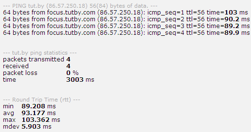
Рис. 11. 1. Результат проверки соединения с сайтом tut.by
Þ Ping mts.by
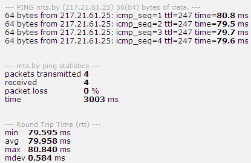
Рис. 11. 2. Результат проверки соединения с сайтом mts.by
Þ Ping mail.ru
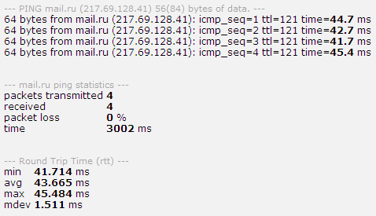
Рис. 11. 3. Результат проверки соединения с сайтом mail.ru
Þ Ping ya.ru
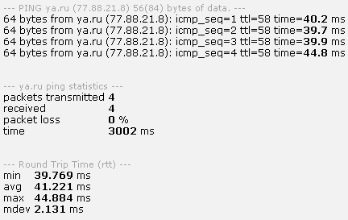
Рис. 11. 4. Результат проверки соединения с сайтом ya.ru
Þ Ping kinomania.ru
Рис. 11. 5. Результат проверки соединения с сайтом kinomania.ru
Þ Ping vkontakte.ru
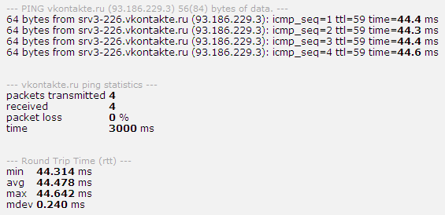
Рис. 11. 6. Результат проверки соединения с сайтом vkontakte.ru
Þ Ping 360.by
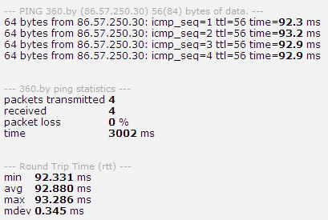
Рис. 11. 7. Результат проверки соединения с сайтом 360.by
Задание 2. Результаты исследований представить в таблице:
|
Доменное имя |
IP-адрес |
Страна |
Число потерянных запросов, % |
Среднее время прохождения запроса, мс |
255 - TTL |
Пример выполнения задания:
|
Доменное имя |
IP-адрес |
Страна |
Число потерянных запросов, % |
Среднее время прохождения запроса, мс |
255 - TTL |
|
tut.by |
86.57.250.18 |
РБ |
0 |
93.117 |
199 |
|
mts.by |
193.232.248.79 |
РБ |
0 |
79.958 |
8 |
|
mail.ru |
194.67.57.126 |
РФ |
0 |
43.665 |
134 |
|
ya.ru |
87.250.251.11 |
РФ |
0 |
43.221 |
197 |
|
kinomania.ru |
87.242.75.119 |
РФ |
0 |
56.616 |
195 |
|
vkontakte.ru |
93.186.225.6 |
РФ |
0 |
44.478 |
196 |
|
360.by |
86.57.250.30 |
РБ |
0 |
92.880 |
199 |
Задание 3. Представить графики статистической информации, в котором указать среднее время прохождения запроса (мс) каждого сетевого узла.
Пример выполнения задания:
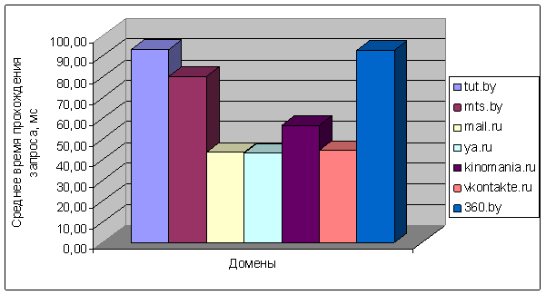
Рис. 11. 8. Сводный график среднего времени прохождения пакета для каждого домена
Утилита tracert
Задание 4. Произвести трассировку узлов www.mail.ru, gazeta.ru или любых других по желанию, но не менее 7-и узлов. Результаты протоколировать в файл st.log. Представить графики времени прохождения шлюзов для каждого узла (для 3-х пакетов), указать наиболее узкие места в сети.
Пример выполнения задания:
В результате выполнения трассировки будет выведена таблица, содержащая следующие сведения: количество шлюзов, через которые прошел пакет (столбец Hop); минимальное, максимальное и среднее значение времени прохождения шлюзов (столбцы Min, Max, Avg); IP-адрес (столбец IP address); название хоста (столбец Host); место нахождения шлюза (столбец Geo Information) и координаты (столбцы Latitude, Longitude), а также расстояние от одного шлюза до другого (столбец Distance).
Þ Traceroute gazeta.ru
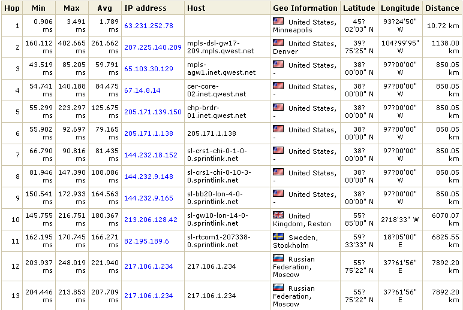
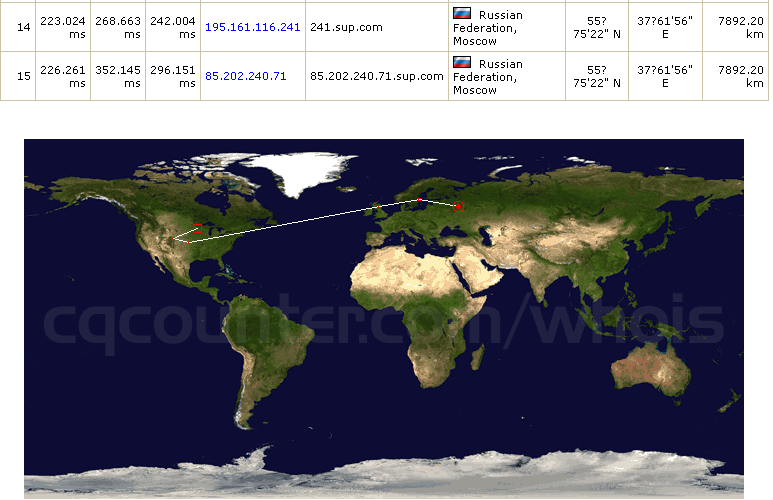
Рис. 11. 9. Результат выполнения трассировки сайта gazeta.ru и карта маршрута прохождения пакета
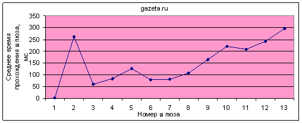
Рис. 11. 10. График времени прохождения шлюзов до сайта gazeta.ru
Þ Traceroute ya.ru
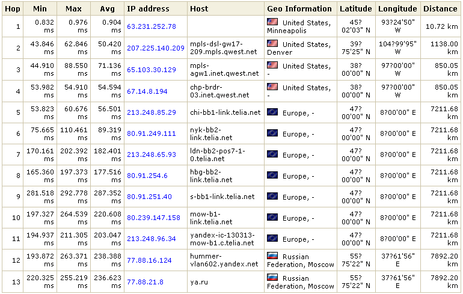
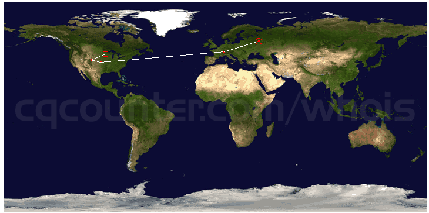
Рис. 11. 11. Результат выполнения трассировки сайта ya.ru и карта маршрута прохождения пакета
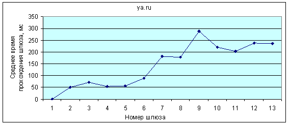
Рис. 11. 12. График времени прохождения шлюзов до сайта ya.ru
Þ Traceroute byfly.by
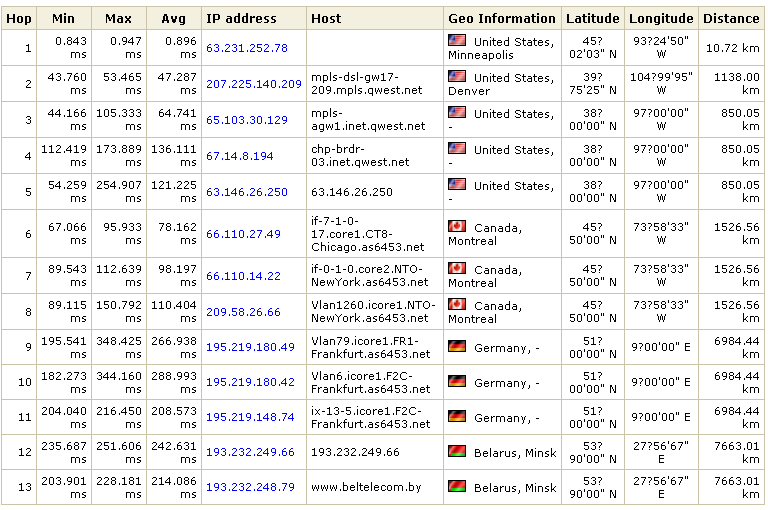
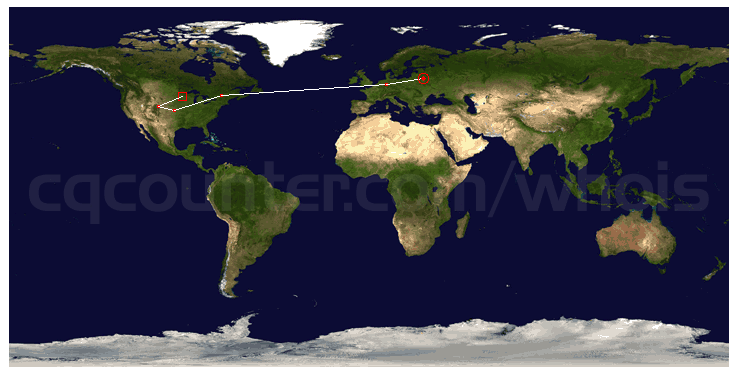
Рис. 11. 13. Результат выполнения трассировки сайта byfly.by и карта маршрута прохождения пакета
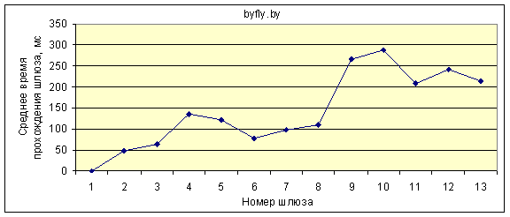
Рис. 11. 14. График времени прохождения шлюзов до сайта byfly.by
Þ Traceroute 360.by
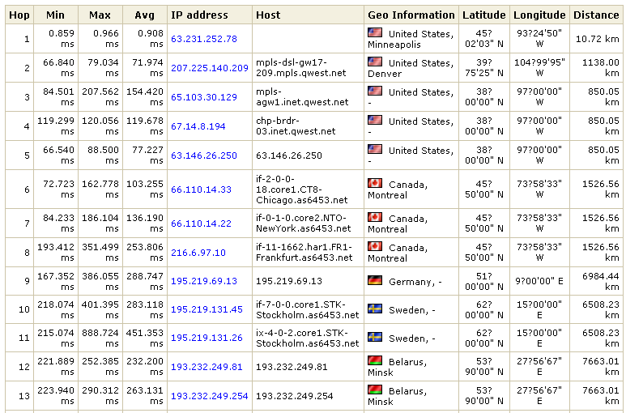
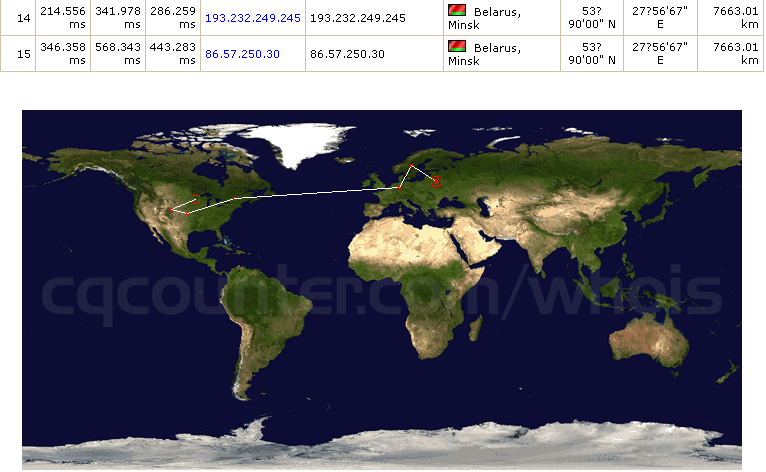
Рис. 11. 15. Результат выполнения трассировки сайта 360.by и карта маршрута прохождения пакета
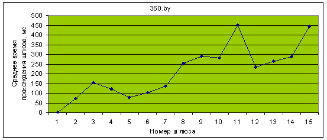
Рис. 11. 16. График времени прохождения шлюзов до сайта 360.by
Þ Traceroute tut.by
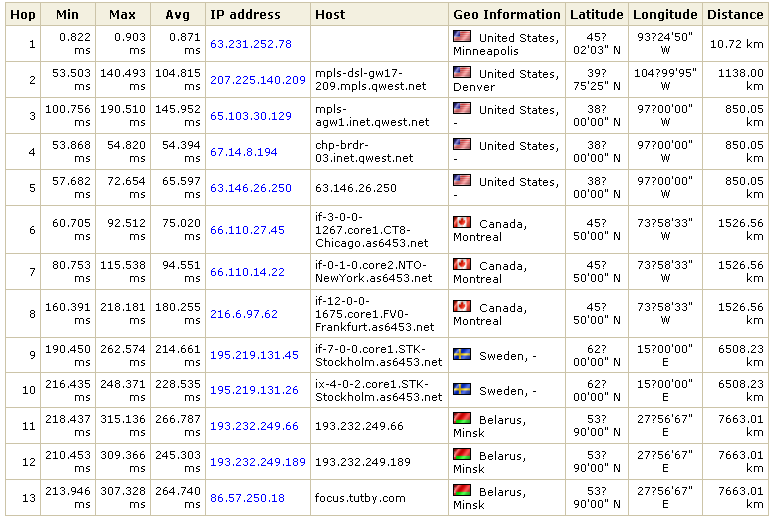
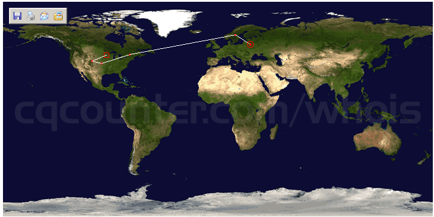
Рис. 11. 17. Результат выполнения трассировки сайта tut.by и карта маршрута прохождения пакета
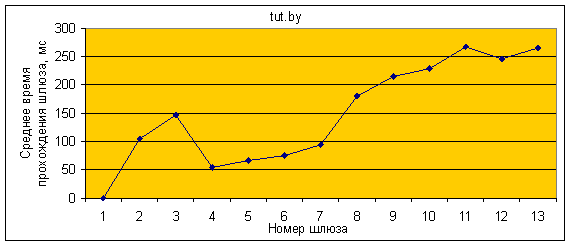
Рис. 11. 18. График времени прохождения шлюзов до сайта tut.by
Þ Traceroute onliner.by
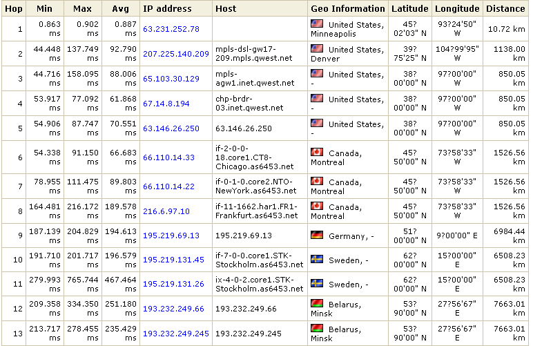
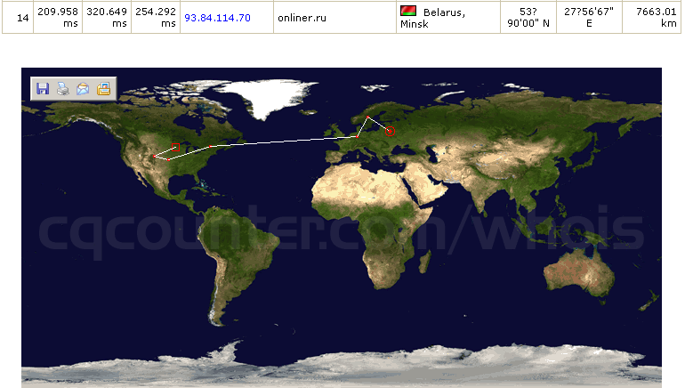
Рис. 11. 19. Результат выполнения трассировки сайта onliner.by и карта маршрута прохождения пакета
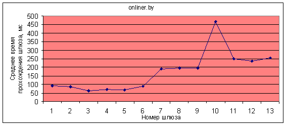
Рис. 11. 20.
График времени прохождения шлюзов до сайта onliner.by
Þ Traceroute ztema.ru
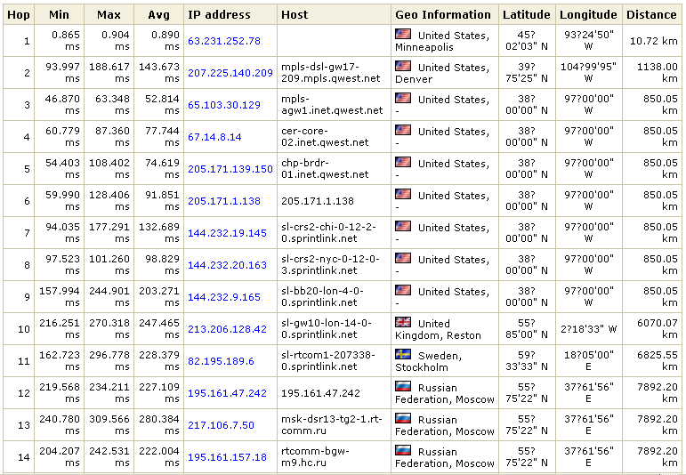
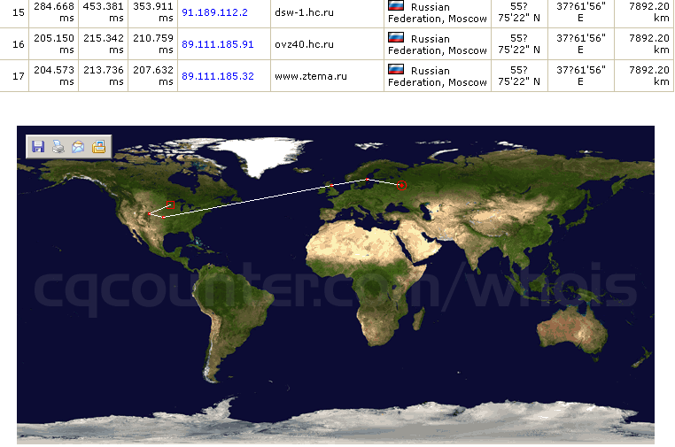
Рис. 11. 21. Результат выполнения трассировки сайта zmeta.ru и карта маршрута прохождения пакета
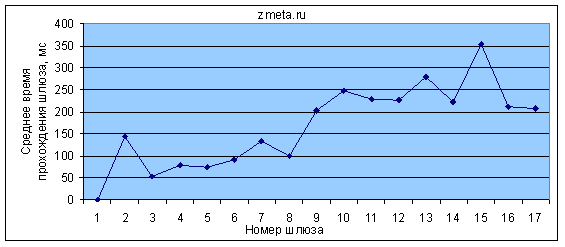
Рис. 11. 22. График времени прохождения шлюзов до сайта zmeta.ru
Задание 5. Описать маршрут прохождения для двух выбранных узлов. Описание маршрута включает название страны, города и сети, через которые прошел пакет.
Пример выполнения задания:
Þ Traceroute mts.by

Рис. 11. 23. Маршрут прохождения запроса до сайта mts.by
Þ Traceroute microsoft.com
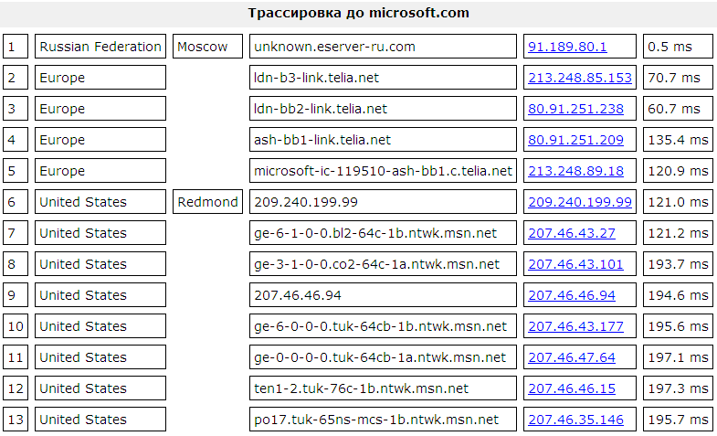
Рис. 11. 24. Маршрут прохождения запроса до сайта microsoft.com
Содержание отчета
1) Результаты тестирования.
2) Таблица с результатами исследований согласно Заданию 2.
3) Графики статистической информации согласно Заданию 3.
4) Листинг произведенной трассировки узлов.
5) Описание маршрута прохождения трассировки.
6) Графики времени прохождения шлюзов (по количеству узлов) с анализом узких мест сети.
Контрольные вопросы
1. Практическое применение утилиты ping.
2. Для чего используют утилиту traceroute?
3. По какому протоколу передаются запросы утилиты ping?
4. Формат утилиты ping и назначения параметров.
5. Что такое TTL и для чего оно используется?
6. В чем отличие команд traceroute и tracert?
7. Формат команды tracert.
8. На каком протоколе основана утилита traceroute?
9. Какие данные показаны на выходной информации утилиты ping?
10. Какие данные показаны на выходной информации утилиты tracert?